선택된 학습 풀 8000장 내부에서 5-fold CV. 고정 시험 2000장은 최종 재학습 뒤에만 평가합니다. 공식 전체 test benchmark가 아닌 교육용 내부 holdout입니다. Test를 반복 비교하며 추가 튜닝하면 독립 최종평가로 볼 수 없습니다.
| name | domain | model | model_description | n_train_pool | n_fold_train | n_fold_validation | n_test | folds | cv_loss_mean | cv_accuracy_mean | cv_accuracy_std | selected_epochs | test_loss | test_accuracy | test_macro_f1 | cv_total_seconds | refit_train_seconds | total_fit_seconds | test_seconds | test_ms_per_image | parameters | device | seed | learning_rate | batch_size | dropout | weight_decay | max_cv_epochs | augmentation | dataset_sha256 | train_pool_hash | test_hash | evaluation_protocol | pretrained |
|---|---|---|---|---|---|---|---|---|---|---|---|---|---|---|---|---|---|---|---|---|---|---|---|---|---|---|---|---|---|---|---|---|---|---|
| resnet18_cifar | cifar10 | resnet18_cifar | ResNet18 (CIFAR stem) | 8000 | 6400 | 1600 | 2000 | 5 | 1.2544 | 0.55375 | 0.033363 | 5 | 1.1953 | 0.581 | 0.57277 | 59243 | 1400.9 | 60644 | 36.271 | 18.135 | 11173962 | Intel64 Family 6 Model 186 Stepping 2, GenuineIntel | 42 | 0.001 | 32 | 0.2 | 0.0001 | 5 | True | 54902454569ffb98f4847cd01389eda6e4a52f45cf6891e3ca25b5b5228492fb | 72495781e5d4a33272e97561058158d89b4af37656f24fd7bf81560a9c44f55e | 954d1c48eb69f42013c20fe0486073977b48b9753067e0f91a9fbaae83b4614b | internal_holdout2000_after_5fold_cv_and_refit | False |
| fold | n_train | n_validation | best_epoch | validation_loss | validation_accuracy | validation_macro_f1 | train_seconds | validation_seconds |
|---|---|---|---|---|---|---|---|---|
| 1 | 6400 | 1600 | 5 | 1.1056 | 0.60375 | 0.59887 | 817.43 | 64.563 |
| 2 | 6400 | 1600 | 5 | 1.2467 | 0.5675 | 0.55972 | 832.92 | 66.612 |
| 3 | 6400 | 1600 | 5 | 1.2963 | 0.53812 | 0.53017 | 55112 | 90.307 |
| 4 | 6400 | 1600 | 5 | 1.2898 | 0.54312 | 0.53233 | 1122 | 71.034 |
| 5 | 6400 | 1600 | 4 | 1.3337 | 0.51625 | 0.51193 | 907.84 | 74.938 |
CV 표준편차는 fold 간 변동이며 test 정확도의 신뢰구간이 아닙니다. OOF는 각 fold의 validation loss로 선택된 checkpoint의 진단 결과입니다.
학습 loss에는 augmentation과 학습 모드가 적용되며, 검증은 평가 모드입니다.
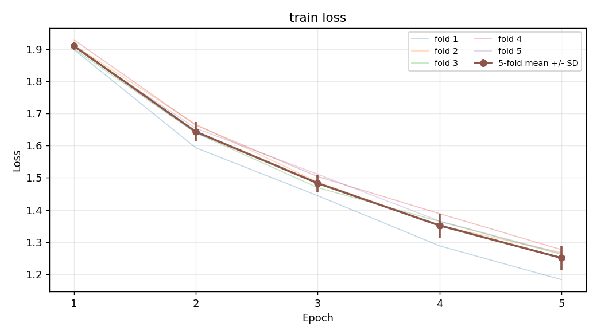
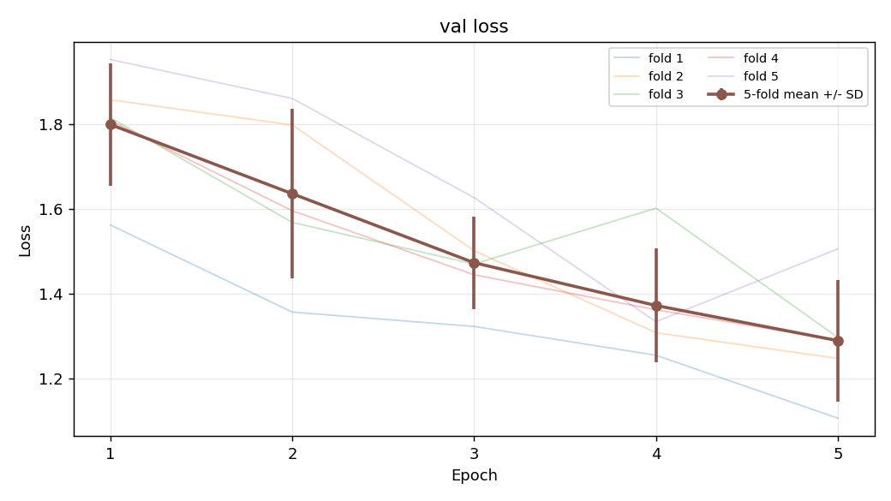
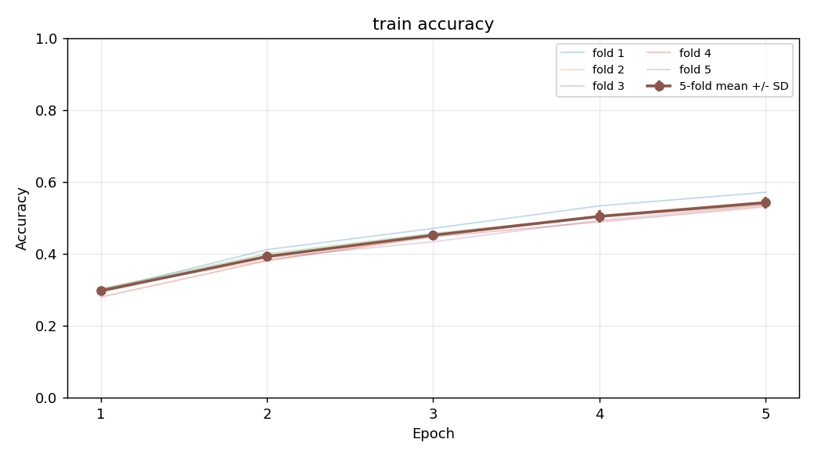
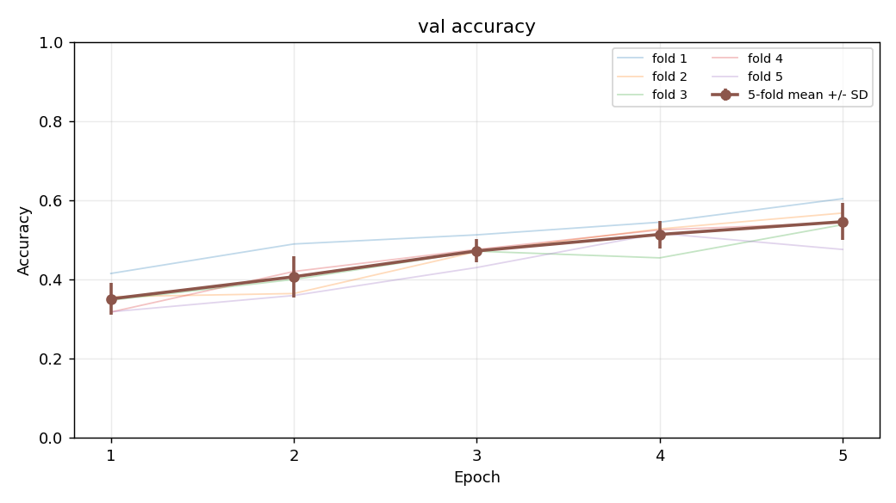
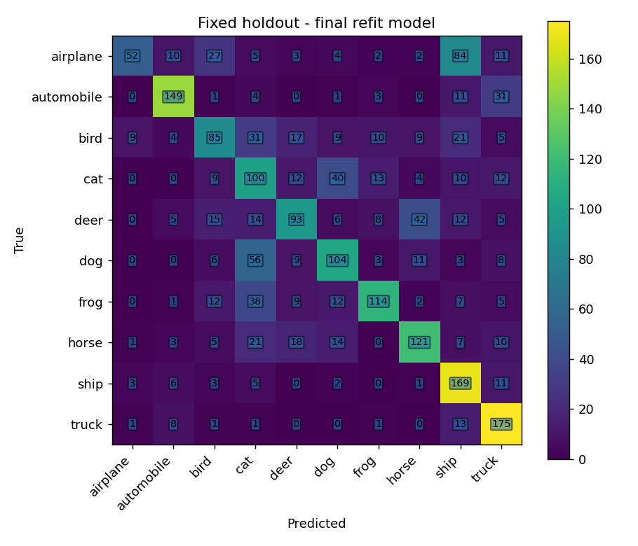
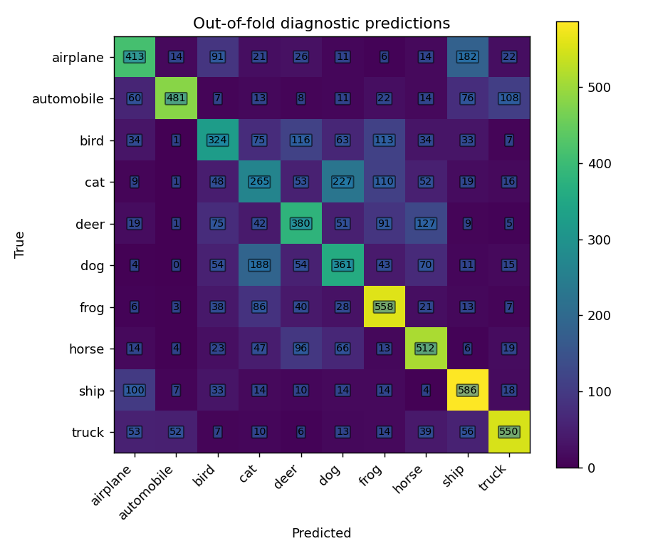
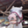
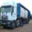
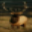
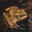
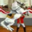
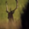
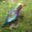
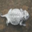
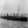
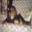
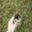
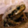
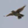
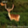
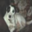
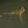
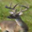
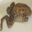
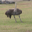
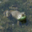
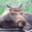
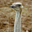
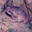
{
"domain": "cifar10",
"model": "resnet18_cifar",
"epochs": 5,
"batch_size": 32,
"learning_rate": 0.001,
"weight_decay": 0.0001,
"dropout": 0.2,
"width": 16,
"augmentation": true,
"seed": 42,
"cv_seed": 137,
"subset_seed": 421,
"train_count": 8000,
"cpu_threads": 4,
"name": "resnet18_cifar"
}